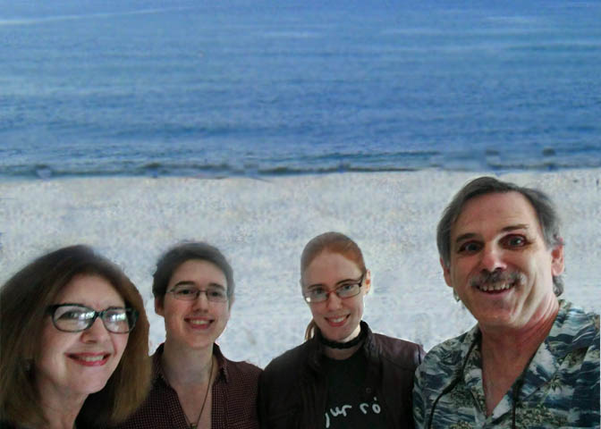

Digital Media Projects
Images
All of the images below were created using Photoshop CC. From left to right, the images are a parenting banner, an icon based on the parenting banner, and a beach photo. The parenting banner utilized two separate photos, one for the background and one in the foreground, with the foreground image being edite with a mask used to reveal the background and apply a fade. The the beach photo was created using a picture of a beach for the background and a picture of my family inside. Multiple techniques were necessary to reach the finished result, including masks for hide or reveal backgrounds and painting with light, and the creation of a repeated pattern using a selection of the beach photo. Click on each thumbnail to see the fullsize image.
{kind=link}
{kind=link}
{kind=link}
Audio
The audio file below was created using Audacity, Ocenaudio, and a Logitech headset. I recorded myself reading the story in Ocenaudio, and then imported that file into Audacity, where I could combine the voice track with a piece of music. I also applied a fade in and out, adjusted the volume of the musice, and applied an effect to the voice track. The story that was read is a short Creepypasta, and the music is "Omen" compossed by Ryan Amon for the Bloodborne soundtrack.
Use the player to listen in the browser or click the file name to download the mp3, which can be played in most media players including Windows Media Player.
Video
For the video proeject, I recorded the video on my Samsung Galaxy S5 and edited the footage in Aimersoft video editor. While editing the video, I applied a fade in/out, several transistions, and muted the video audio so it wouldn't clash with the background music. I also used Aimersoft's intro/credits feature to apply a title screen and end credits. The music track used in the video is Louis Armstrong's "What a Wonderful World". Click the file to auto download the mp4 file, which can be viewed using several media players including Windows Media Player.
Nature Video